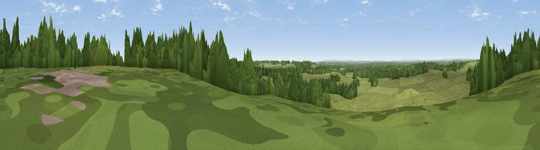

Viewpoint near Burley
#32335 in England · top 39% of its area beats it · near BurleyThe view, rendered

A 360° render of this exact spot computed from the terrain model, tree cover and land cover — summer colours, afternoon light, calibrated against photographs of famous viewpoints. Real trees, hedges and buildings will differ in detail.
The panorama
Grey silhouette: terrain skyline in each direction (720 bearings, Earth curvature and refraction included). Dashed green: skyline with trees (+15 m) and buildings (+8 m) as obstacles. Blue strip: how far the ground is visible on each bearing.
Where the view opens
Wedge length = distance to the farthest visible ground on that bearing (vegetation-aware). Rings at 10, 25 and 50 km.
What fills the view
64% grassland · 33% woodland · 2% cropland ·
Angular shares of the visible panorama (visual magnitude), not map area. Landscape diversity 0.35 (0–1 Shannon).
Key numbers
More beautiful places nearby
The staircase of upgrades: each row has a higher view potential than everything closer. Driving times are estimates from straight-line distance, calibrated against real road routing — check an actual route before setting out.
| Place | Direction | Drive | Score |
|---|---|---|---|
| Viewpoint near Hightown | NW · 2 km | ~4 min | 43.3 |
| Viewpoint near Hurn | SW · 9 km | ~18 min | 53.7 |
| Warren Hill | SSW · 13 km | ~24 min | 60.1 |
| Viewpoint near West Grimstead | N · 21 km | ~35 min | 62.7 |
| Viewpoint near Martin | NW · 21 km | ~35 min | 64.6 |
| Viewpoint near Cranborne | NW · 21 km | ~35 min | 65.0 |
| Viewpoint near Totland | SSE · 21 km | ~35 min | 75.0 |
| West High Down | SSE · 21 km | ~36 min | 79.8 |
50.82867, -1.71775 · source: screening · position refined by local search. Computed location — check access rights before visiting.